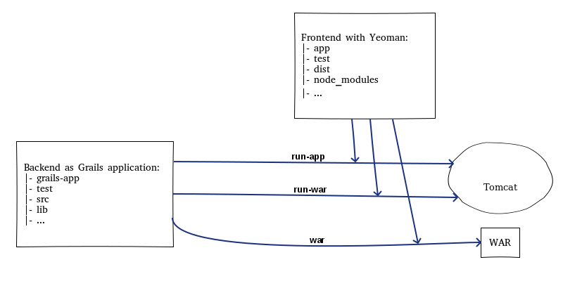
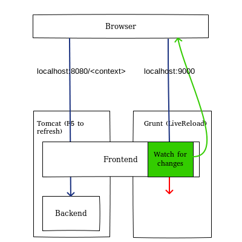
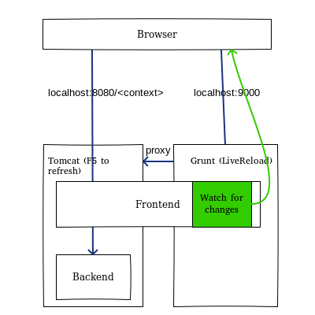
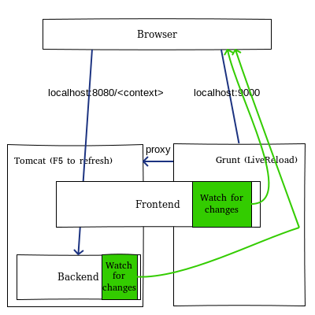

(Quick Reference)
Yeoman Frontend Plugin - Reference Documentation
Authors: Bartek Gawel
Version: 0.1-RC1
1 Yeoman-Frontend Plugin
The Grails Yeoman-Frontend is a plugin used for managing and processing a frontend developed with Yeoman. The plugin integrates the frontend (preserving the Yeoman's directory structure) with a Grails web container during development of a Grails backend application; it assembles the frontend into a Web Application Archive (WAR) file during deployment of the Grails application.
1. Introduction
Yeoman-Frontend is intended to integrate a frontend developed with Yeoman with a Grails backend application.

The Yeoman build process replaces
resources-plugin or
asset-pipeline-plugin but the Yeoman-Frontend can be installed together with the mentioned plugins if you combine client-side and server-side rendering.
In the Grails development mode the plugin runs the
grunt serve command in the background to allow Grunt's tasks to process on-the-fly changes made to the frontend.
When generating a WAR file the plugin runs the
grunt build command to build the frontend and a result from the
dist directory is packaged into the WAR.
Static assets are served by a
filter (inspired by the one available in
asset-pipeline-plugin) that enables HTTP cache headers.
2. Prerequisite
3. Usage: <yo:index/>
Use the
yo:index tag to define an entry point for the Yeoman application.
Most likely you will simply replace Grails
index.html content with
<yo:index/>.
See
index.html in a
dummy Grails app as an example of usage.
4. LiveReload
After issuing the
run-app command (with the default settings) you will have 2 servers up and running: the Grunt server and the Tomcat server.
While the Grunt server takes care of processing your changes made to the frontend, Tomcat hosts your fully functional frontend+backend application.
If you make a change to the frontend (changing
.js,
.scss, etc.), you will see a result of your change immediately in a browser accessing the Grunt server (
http://localhost:9000) because the Grunt server is a live reload server. However all backend calls will fail because the backend is only hosted on Tomcat.
Tomcat is not a live reload server, so changes made to the frontend are reflected in the browser (
http://localhost:8080/<context>) after hitting F5.

4.1. LiveReload for the frontend
The simplest way to have the LiveReload feature for the frontend and the fully functional application at the same time is to proxy all requests to Tomcat on the Grunt server.
To achieve this setup you can install the
mode rewrite Grunt component and configure the
livereload section of the
connect settings in the
Gruntfile.js as follows (add the following snippet to
options of
livereload; remember to replace
<context> with an appropriate value):
middleware: function(connect, options) {
var middlewares = []; middlewares.push(modRewrite(['/(.*)$ http://localhost:8080/<context>/$1 [P]']));
options.base.forEach(function(base) {
middlewares.push(connect.static(base));
});
return middlewares;
}
See the
Gruntfile.js in the
dummy Grails app as an example of usage.
Now you can type
http://localhost:9000 and enjoy the LiveReload together with the functional backend.

4.2. LiveReload for the backend
Apart from the configuration for "LiveReload for the frontend" configure the
livereload section of the
watch settings in the
Gruntfile.js as follows (add the following snippet as an entry of
files; remember to replace
<path-to-root-of-grails-app> with an appropriate value):
'<path-to-root-of-grails-app>/target/classes/**/*.class'
See the
Gruntfile.js in the
dummy Grails app as an example of usage.
Do not specify a path to a directory with Groovy/Java files; the Groovy/Java compiler is slower than a file change watcher, so the browser would be refreshed before a file compilation was finished.

5. Configuration
The plugin needs no configuration as long as a Yeoman application is placed under
grails-app/frontend| Property | Type | Default value | Description |
|---|
yo.frontend.dir | String | 'grails-app/frontend' | Yeoman-generated app directory; this directory should contain the Gruntfile.js |
5.1. Development mode settings:
| Property | Type | Default value | Description |
|---|
yo.runappcmd.off | Boolean | false | Set to false if no command should be run with grails run-app; alternatively you can pass a property -Dyo.runappcmd.off=<Boolean> with the run-app. Useful if you want to run grunt serve outside of the plugin |
yo.runappcmd.exe | String | 'grunt serve' | A command to run with grails run-app; alternatively you can pass a property -Dyo.runappcmd.exe=<your command> with the run-app |
yo.frontend.app.dir | String | 'app' | Yeoman source code directory path relative to yo.frontend.dir |
yo.frontend.app.index | String | 'index.html' | Index file path relative to yo.frontend.app.dir |
yo.frontend.tmp.dir | String | '.tmp' | Yeoman tmp directory path relative to yo.frontend.dir; the plugin looks for an asset in this directory if not found in yo.frontend.app.dir |
5.2. WAR generation settings:
| Property | Type | Default value | Description |
|---|
yo.warcmd.off | Boolean | false | Set to false if no command should be run with grails run-war and grails war; alternatively you can pass a property -Dyo.warcmd.off=<Boolean> with the Grails command |
yo.warcmd.exe | String | 'grunt build' | A command to run with grails run-war and grails war; alternatively you can pass a property -Dyo.warcmd.exe=<your command> with the Grails command |
yo.frontend.dist.dir | String | 'dist' | Yeoman distribution directory path relative to yo.frontend.dir |
yo.frontend.dist.exludes | List | ['.htaccess', '404.html', 'robots.txt'] | Files/directories to exclude from yo.frontend.dist.dir when generating a WAR |
5.3. Settings of the filter that enables HTTP cache headers for assets:
| Property | Type | Default value | Description |
|---|
yo.filter.off | Boolean | false | false does not add filter's mappings to web.xml |
yo.filter.urlPatterns | List | ['/scripts/*', '/styles/*', '/images/*'] | URL patterns which the filter is triggered for |
yo.filter.checkGzip | Boolean | false | Check if a .gz version of a required asset is available and if so, return it |
yo.filter.maxAge | Integer | 31536000 | Default max-age seconds of the Cache-Control header |
yo.filter.mimeTypeMaxAge | Map | [:] | max-age seconds of the Cache-Control header per MIME type, e.g. ['text/html':3600]; if a mapping is not found, return yo.filter.maxAge |
yo.filter.etagStrategy | String/Closure | 'filename' | A strategy to retrieve an ETag value for an asset represented as a org.springframework.core.io.Resource, see a note below |
yo.filter.etagPattern | String | '^([0-9a-f]+)\.[0-9A-Za-z_.]+\..+' | A string pattern (<fingerprint>.<name>.<extension>) to check for a fingerprint in a file's name if yo.filter.etagStrategy='lastModifiedIfNotFilename' or 'timestampIfNotFilename' |
yo.filter.etagStrategy:
- Possible string values (the last three options should be used together with
yo.filter.mimeTypeMaxAge):
'filename' - ETag = file's name; fine if names of assets contain a fingerprint'timestamp' - ETag = timestamp of access'lastModifiedIfNotFilename' - ETag = file's name for fingerprinted names of assets, otherwise last modified date of the file'timestampIfNotFilename' - ETag = file's name for fingerprinted names of assets, otherwise timestamp of access.
- Your custom
Closure (available objects: request, response, resource, applicationContext, servletContext)
6. Known limitations
- In the development mode if a new file/directory is created in the root directory of
yo.frontend.app.dir, the file/directory will not be served by the plugin until the application is restarted. New files/directories being added to sub-directories of yo.frontend.app.dir existing prior run-app will be served.
- Be aware of this Grails bug; the event
eventConfigureTomcat must be invoked to run the plugin in the Grails development mode.
7. Release History
- Oct 29, 2014
- 0.1-RC1 - First version (tested on Linux, Windows with Grails versions: 2.3.5, 2.4.3)